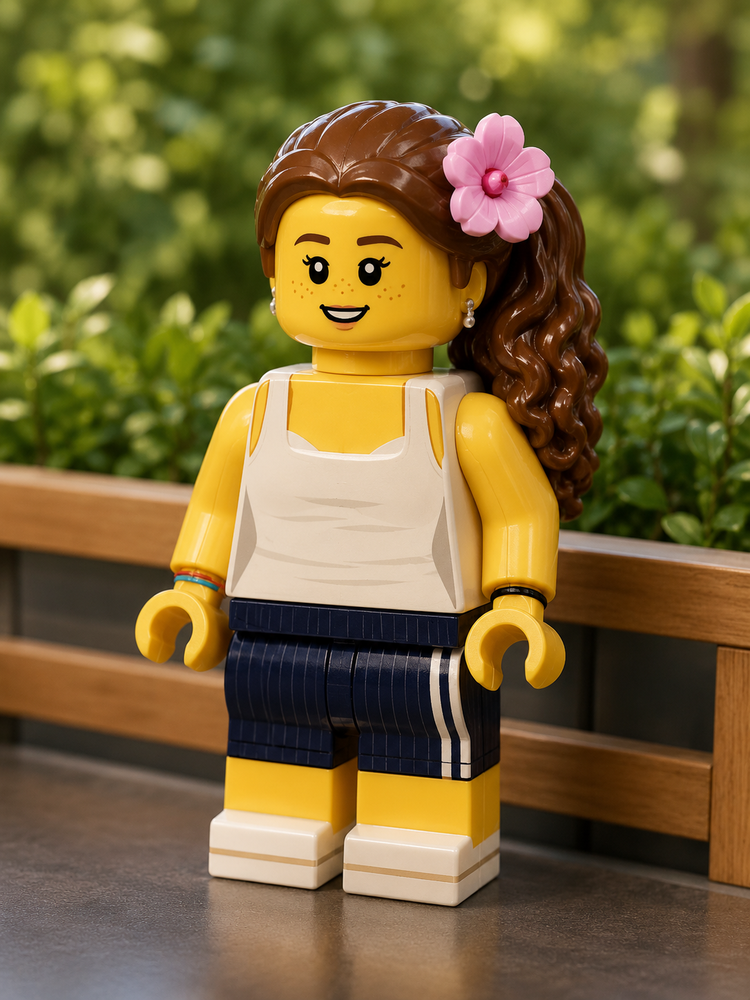
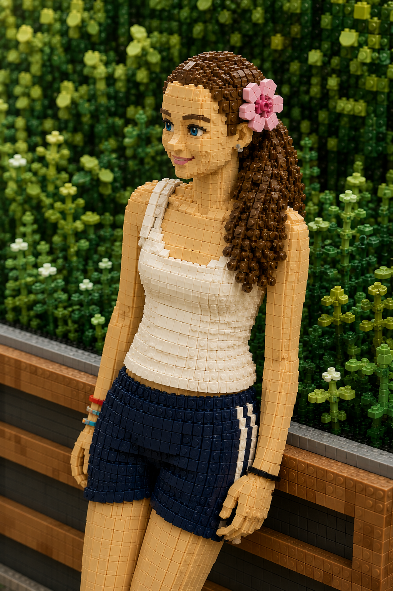

AKB
HTML & ApplikationsentwicklungHTML programmiert und Einblick in den Büroalltag erhalten.
Baden · Schweiz
Schülerin mit Interesse an Informatik, Design und Lebensmittelwissenschaften.
Erste Erfahrungen in Programmierung, Systemtechnik, KI und kreativer Projektarbeit.

Über mich
Ich bin Schülerin an der Bezirksschule Burghalde in Baden. Bei Youth Intelligence Agency habe ich viel über Informatik, Wissenschaft und Teamwork gelernt. Mit meiner Kreativität, meiner Teamfähigkeit und meiner selbstständigen Arbeitsweise möchte ich mich in einer Lehrstelle einbringen und weiterentwickeln.
Berufliche Einblicke
Relevante Einblicke in digitale Berufsfelder und die Arbeitswelt.
HTML programmiert und Einblick in den Büroalltag erhalten.
Workshops und Informationen zu IMD, EDB und Informatik.
Workshops zu verschiedenen Bereichen der Informatik.
Einblicke in IT, Produktionsstätte und Social-Media-Arbeit.
Was ich schon gemacht habe
Workshops und Präsentationen in Cybersecurity, Hacking, Social Media, Hardware, VR und KI.
Junior-Instruktorin mit Erfahrungen in Cubetto, Scratch, micro:bit, Tinkercad, 3D-Druck, Procreate, KI, LEGO Education und Brainstorming-Workshops.
IT-Förderprogramm mit Modulen zu Cybersecurity, KI und Programmieren.
Mitwirkung als Mini-Mentorin beim Woman++ Hackathon.
10-Fingersystem-TastaturschreibkursJanuar – Juni 2025
Einzelaustausch 14/14 · JuraMärz – Mai 2025 · Zweiwöchiger Sprachaustausch
Kunstkurs · ZürichJuli 2023 · Ferienkurs
Knowledge Lab & Frame Fotografie2022 – 2023 · IT, 3D-Druck, Fotografie und Lichttechnik
Ausbildung
Primarschule · Baden
Oberstufe · Baden
Neugier weiterdenken
Mitarbeit an KI-gestützten Bildungsprojekten für Kinder: «Pop You Up» und «Ach so geht dies».
Workshops zu Cultural Quotient und Female Digital Leadership.
Aargauische Berufsschau in Wettingen und SwissSkills in Bern.
Mein Werkzeugkasten
Kontakt
Ich freue mich über eine Nachricht per E-Mail.
m.s [at] uberli [dot] ch
github.com/melbee-5400